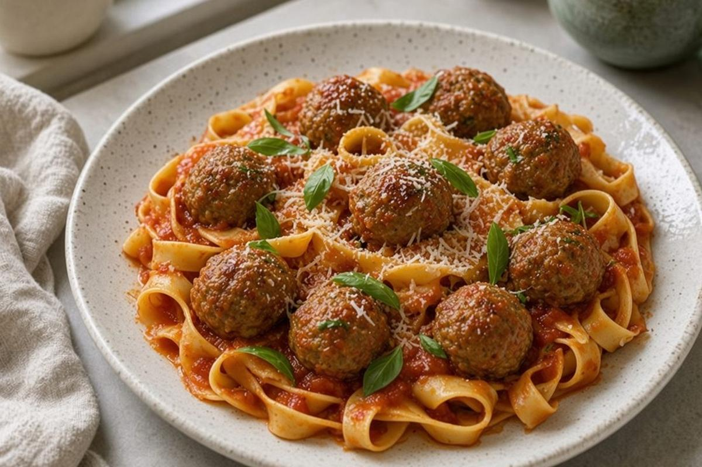

Thu 26 Nov
Lamb and carrot meatballs in tomato sauce
Lamb and carrot meatballs in tomato sauce with tagliatelle
Sunday: 30 min to roll and bake
Jude: Lift Jude's meatballs and a spoon of sauce out before you season.
Lamb and carrot meatballs in tomato sauce with tagliatelle
Sunday: 30 min to roll and bake. Cook day: 20 min. · Serves 2 + Jude
italian · lamb · mid · low
What it cost
Lamb mince 300 g £3.34 (3 for £10); Tagliatelle 500 g £2.40. About half used
Jude, before step 5: Lift Jude's meatballs and a spoon of sauce out before you season.
Ingredients
For this sitting
After his portion
Method
-
Jude: Lift Jude's meatballs and a spoon of sauce out before you season.
Jude's plate
Jude: 2–3 plain soft meatballs, mashed or quartered, with a spoon of unseasoned sauce and short pieces of soft tagliatelle.
Shop-bought tomato sauce can carry a little salt, so keep his sauce to a spoon.
Keeping it: Cooked meatballs: freezer 3 months. Once defrosted, eat within 24 hours.
For the cookbook
A note for next time. It does not change the method above.